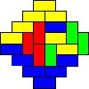
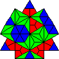

Tiling Applets
These applets generate random tilings of various
regions. These all
use the Propp-Wilson algorithm to form.
To see larger versions
of these kinds of tilings, refer to our scrapbook
of pictures.
|
|
An ordinary checkerboard. The relaxed boundary conditions cause the whole tiling to be random. |
|  |
This is a diamond shaped region composed of squares covered with ordinary dominos. This is the most studied of all regions. |
|
|
This is an orinary hexagon covered with "lozenges." It appears as if it were a box with many blocks placed inside it. |
|
|
This near diamond shaped region is covered with "diabolos." It looks neat, but takes longer to form. |
|  |
This region takes even longer than a fortress to form, but the variety of local patterns that emerge make it worth the wait. |
Note: For best performance, use Internet Explorer.